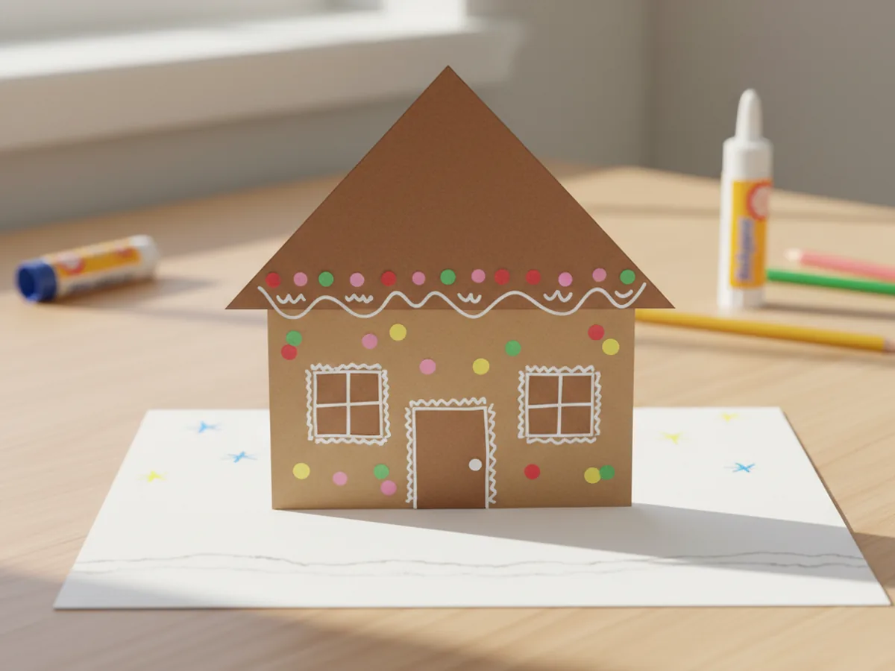
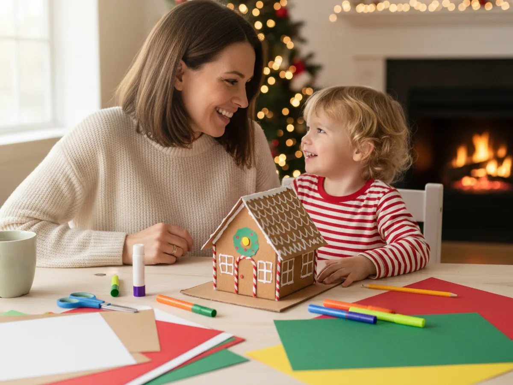
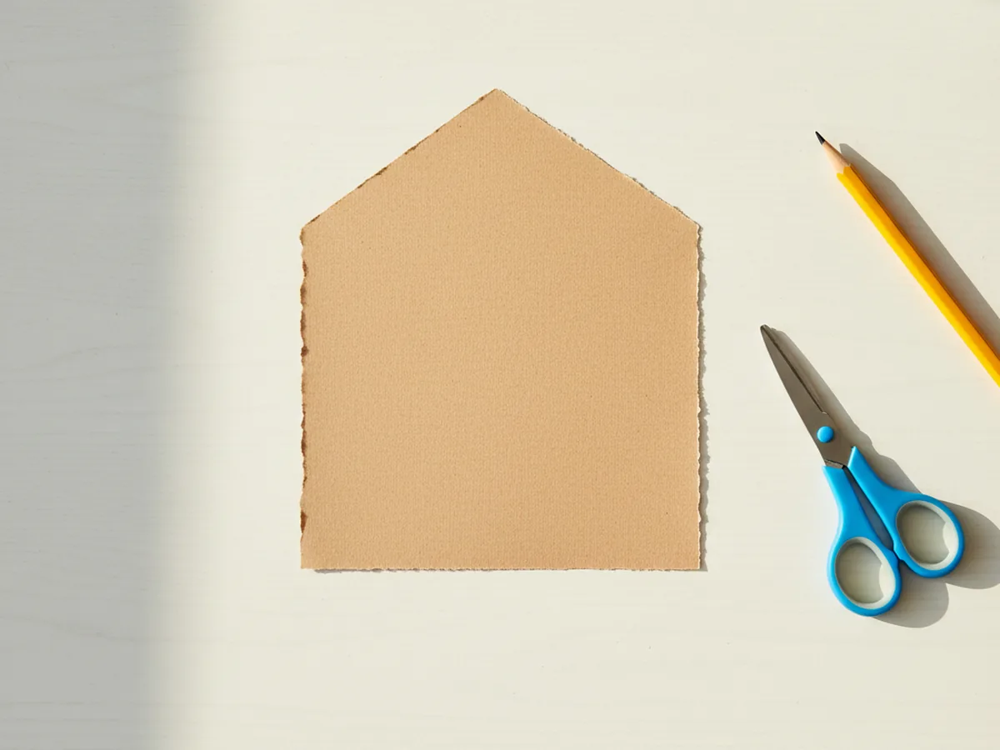
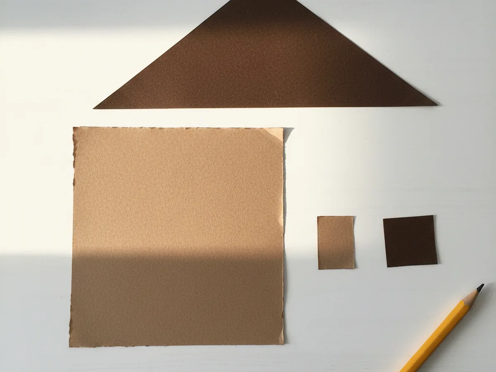
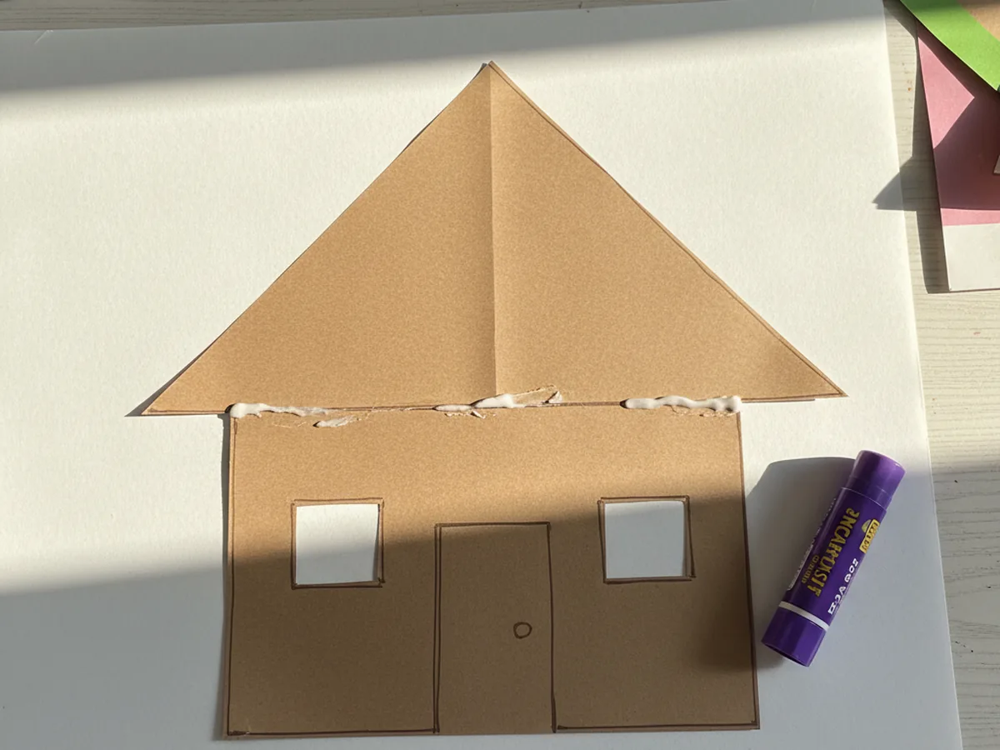
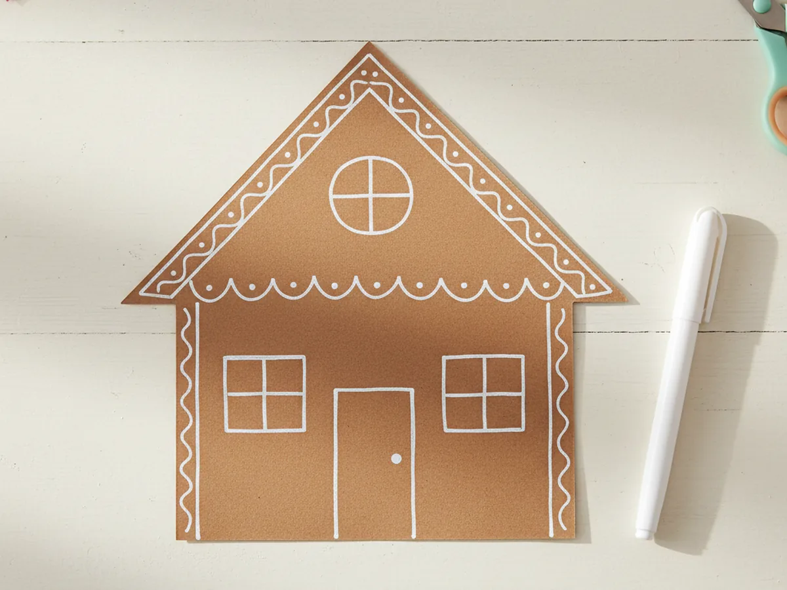
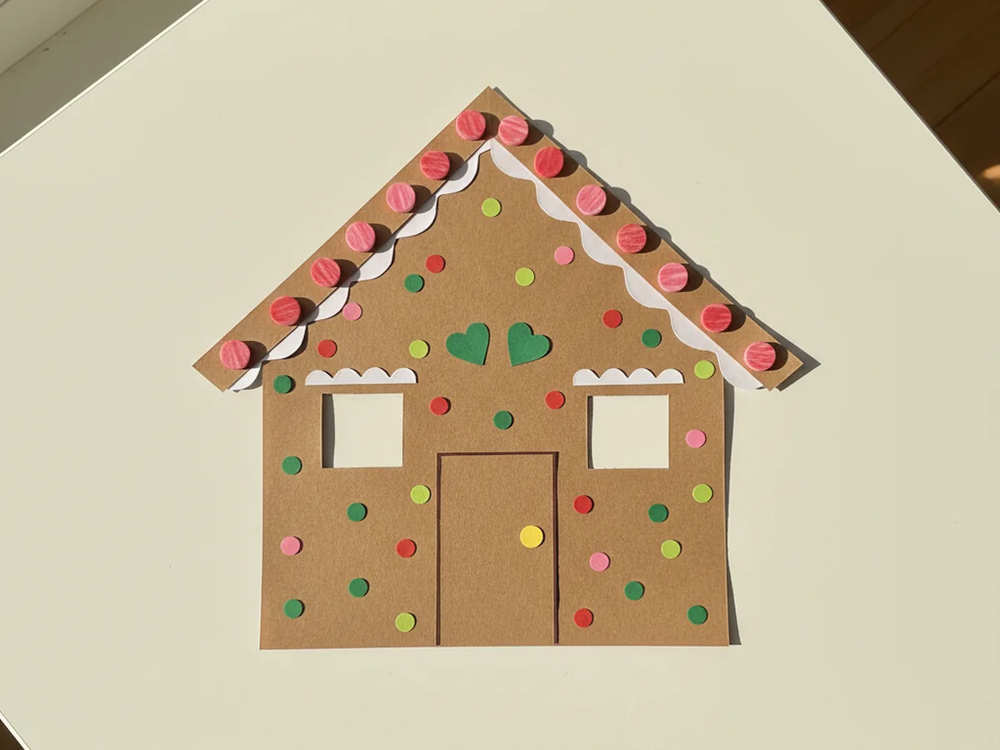
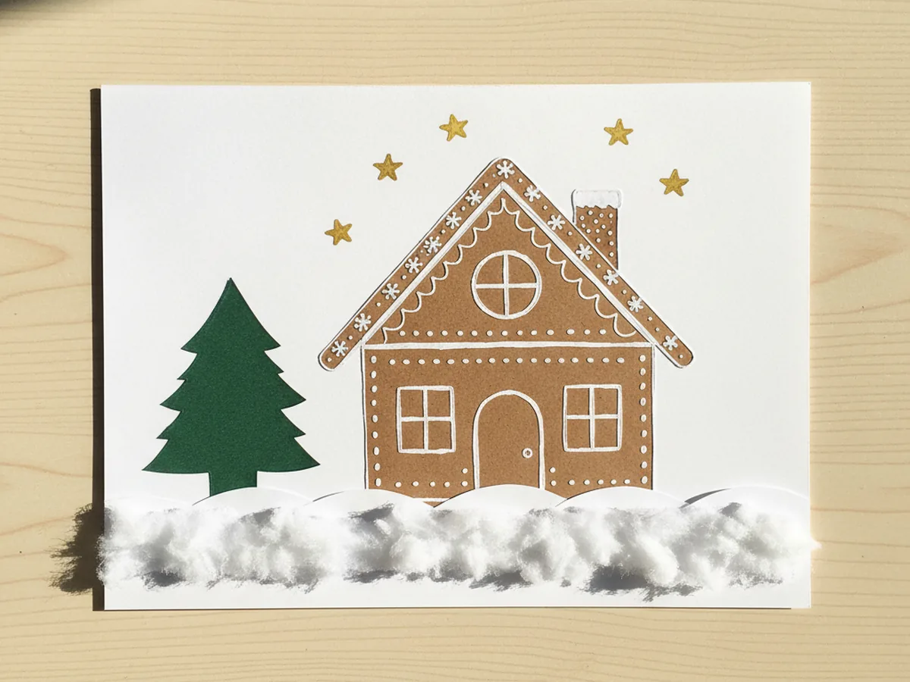

There is something so cozy about a tiny gingerbread house. The kind that sits on a kitchen counter all through December, a little crooked, a little candy-covered, and beaming with personality. This gingerbread house paper craft gives your child that same sweet feeling without any baking, no royal icing, and zero stress about a roof caving in. Just paper, glue, and a few snippets of holiday magic that come together in about thirty minutes. 🎄
What I love most about this paper gingerbread house craft is how it forgives every wobble. A tilted roof looks adorable. A slightly crooked door looks like the gingerbread family lives a real life inside. Even a candy that goes on a tiny bit lopsided makes it look more handmade and lived-in. It is the kind of slow, calm, pretty Christmas craft that feels like a hug at the kitchen table, the kind a mom and her little one will both remember.
Why Kids Love This Craft
Children adore this gingerbread house paper craft because the house comes together so quickly and so visibly. As soon as the brown square is cut out, your child can already see the gingerbread shape forming. By the time the triangle roof goes on, they are practically bouncing with excitement to start the candy decorating. That fast visible payoff matters a lot for young kids who lose patience with anything that takes too long.
This easy gingerbread paper craft also gives lovely fine motor practice without ever feeling like work. Cutting straight edges, snipping tiny candy circles, pinching tiny shapes to glue them down, all of it builds the same little finger muscles your child will use for buttons, pencils, and laces later on. It is a gentle, calm activity that happens to be wonderful for them.
The best part is the decorating step. Once the structure is glued, the whole craft turns into open-ended candy fun. Every paper gingerbread house ends up looking different because every kid imagines their own dream house: jellybean roof, peppermint windows, polka dot walls, you name it. Watching your child invent their own little world is one of those quiet moments you do not want to miss. 💛

What You'll Need
Here is everything you need for this gingerbread house paper craft. I always lay the supplies out first so my little one can sit down and dive straight in without any waiting.
- Crayola Construction Paper (240 sheets, 12 colors), the perfect mix for a brown house body, a brown roof, and tiny red, green, and yellow candy details.
- White Cardstock 8.5 x 11 inch (100 sheets), a sturdy white background that makes the finished gingerbread house pop.
- Elmer's Disappearing Purple Glue Sticks (30 pack), washable and easy for tiny fingers to twist up and apply.
- Fiskars 5 inch Blunt Tip Kids Scissors, the right safe size for cutting the simple shapes in this craft.
- Crayola Broad Line Markers (10 classic colors), perfect for drawing little details and marker icing accents.
- Elmer's Liquid School Glue (4 oz), optional, for piping puffy white icing trim that dries clear and shiny.
- A pencil for sketching the gingerbread shapes lightly before cutting.
Step-by-Step Instructions
This gingerbread house paper craft walks through six simple steps that flow naturally from cutting to gluing to decorating. Take your time and let your little one do as much as they can comfortably handle.
Step 1: Cut the House Base Shape
Start by lightly sketching a square or rounded square on a sheet of brown construction paper. Aim for a size about as wide as your child's open hand, around four to five inches across. The shape can be a clean square or a square with a soft pentagon point at the top so the roof can rest on it. Cut it out together using kid scissors. Soft, slightly uneven edges are completely fine and actually make the gingerbread look extra cozy.

Step 2: Cut the Roof, Door, and Windows
From a second sheet of brown construction paper, cut a wide triangle for the roof, a little wider than the house base so it overhangs slightly on each side. Then cut a small rectangle for the door, about the size of a postage stamp, and two small squares for the windows. You can use a slightly darker brown for the roof if you have one, which makes the house look layered and more dimensional.
Lay all the pieces side by side on the table so your little one can already picture how the gingerbread house will come together. This is a great moment to talk about which window goes where and where the door belongs.

Step 3: Glue the House Together
Now for the fun part of building the gingerbread house. Add a swipe of glue to the back of the brown triangle roof and press it firmly along the top edge of the base shape, letting it overhang a tiny bit on either side. Glue the small rectangle in the bottom center of the base for the door, and press the two square windows on either side of it. Hold each piece down with a flat finger for a few seconds so the glue grips well.
Stand back together and admire how quickly the simple gingerbread house craft already looks like a real little house. This is usually the moment your child gasps and lights up.

Step 4: Add the White Icing Trim
Time to bring the gingerbread look to life with sweet white icing. Use a white gel pen, a thin line of white school glue, or a white paint marker to draw a wavy icing line along the entire bottom edge of the roof, just like piping royal icing on a real gingerbread house. Add a thin frame around the door, around each window, and a soft drippy line along the side edges of the house.
Let your child do as much of this as they can. Wobbly icing is the most charming kind. Real gingerbread bakers know that a perfect line is impossible, and that is exactly what makes this cute paper gingerbread house craft feel so authentic.

Step 5: Add the Candy Details
This is where the whole craft turns magical. Snip tiny circles, hearts, and dots from red, pink, green, and yellow construction paper to act as candies. Glue a row of bright dots along the roof to look like jellybeans. Add a single round candy as a doorknob, two small hearts above the windows, and tiny scattered dots all over the walls like sprinkles. Anything goes here, and every gingerbread house will look beautifully different.
If your child wants to use real touches, a few small sequins, foam stickers, or rhinestones look amazing on the finished house. This is the step where pretend play takes over and the gingerbread family gets named, given pets, and granted snowy mountain views.

Step 6: Mount on a Snowy Background
Glue the finished gingerbread house onto a piece of white cardstock as a clean, snowy background. Add a soft snowy ground line under the house using a white gel pen, white paint, or a torn strip of white paper. Sprinkle a few marker stars in the sky, draw tiny snowflakes around the roof, or add a pine tree silhouette beside the house. These tiny final touches make the gingerbread house paper craft feel like a complete winter scene that is ready to display proudly on the fridge or above a cozy reading nook. ✨

Variations to Try
Stand-Up Gingerbread Village: Make several smaller gingerbread houses using the same cutting method, then fold a small flap at the bottom of each so they can stand upright. Line them along a windowsill with a strip of white paper snow underneath for a sweet little gingerbread village your whole family can admire.
Tissue Paper Stained Glass Windows: Cut larger square windows in the brown house body and tape small squares of red, yellow, or green tissue paper behind them. When you tape the finished gingerbread house in a sunny window, the tissue panels glow softly like a real stained glass cottage. This version turns the same craft into a calm, cozy sensory project.
Gingerbread Family Card: Fold the white cardstock background in half before mounting the gingerbread house on the front, turning the craft into a homemade Christmas card. Inside, your child can draw a tiny gingerbread family or write a sweet message for grandparents. It is one of the loveliest early learning at home moments and a heartfelt holiday gift in one.
Final Thoughts
This gingerbread house paper craft is one of those sweet, low-pressure projects that asks for almost nothing in supplies and gives back the biggest smile from your child. The cutting, gluing, and candy-decorating all unfold at a calm, cozy pace, which makes it a wonderful December afternoon activity, a snowy weekend morning project, or a way to slow down together right before the holidays. Whatever you do with the finished house, your child will remember the moment you made it together.
If your little one finishes their first paper gingerbread house, save this article on Pinterest so other craft-loving mamas can find it easily. Happy crafting, friend! 🌟
More Crafts You'll Love
If your child loved this gingerbread house paper craft, they will adore these other festive and easy paper projects too: